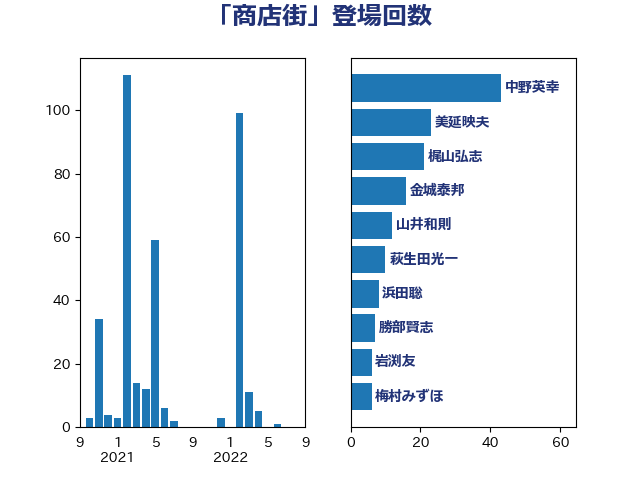

単語「商店街」

| 中野英幸 | 自由民主党 | 43 回 |
| 美延映夫 | 日本維新の会 | 23 回 |
| 梶山弘志 | 自由民主党 | 21 回 |
| 金城泰邦 | 公明党 | 16 回 |
| 山井和則 | 立憲民主党 | 12 回 |
| 萩生田光一 | 自由民主党 | 10 回 |
| 浜田聡 | NHK党 | 8 回 |
| 勝部賢志 | 立憲民主党 | 7 回 |
| 岩渕友 | 日本共産党 | 6 回 |
| 梅村みずほ | 日本維新の会 | 6 回 |
| 早稲田ゆき | 立憲民主党 | 5 回 |
| 杉久武 | 公明党 | 5 回 |
| 石垣のりこ | 立憲民主党 | 5 回 |
| 山田美樹 | 自由民主党 | 4 回 |
| 細田健一 | 自由民主党 | 4 回 |
| 菅義偉 | 自由民主党 | 4 回 |
| 赤羽一嘉 | 公明党 | 4 回 |
| 三宅伸吾 | 自由民主党 | 3 回 |
| 清水貴之 | 日本維新の会 | 3 回 |
| 田村憲久 | 自由民主党 | 3 回 |
| 白石洋一 | 立憲民主党 | 3 回 |
| 落合貴之 | 立憲民主党 | 3 回 |
| 西村康稔 | 自由民主党 | 3 回 |
| 音喜多駿 | 日本維新の会 | 3 回 |
| 伊藤岳 | 日本共産党 | 2 回 |
| 加田裕之 | 自由民主党 | 2 回 |
| 小沼巧 | 立憲民主党 | 2 回 |
| 柚木道義 | 立憲民主党 | 2 回 |
| 石井正弘 | 自由民主党 | 2 回 |
| 高橋千鶴子 | 日本共産党 | 2 回 |
| 三木亨 | 自由民主党 | 1 回 |
| 伊藤俊輔 | 立憲民主党 | 1 回 |
| 伊藤孝恵 | 国民民主党 | 1 回 |
| 古川元久 | 国民民主党 | 1 回 |
| 塩川鉄也 | 日本共産党 | 1 回 |
| 大口善徳 | 公明党 | 1 回 |
| 大塚耕平 | 国民民主党 | 1 回 |
| 大西健介 | 立憲民主党 | 1 回 |
| 宮本周司 | 自由民主党 | 1 回 |
| 宮本徹 | 日本共産党 | 1 回 |
| 小島敏文 | 自由民主党 | 1 回 |
| 小熊慎司 | 立憲民主党 | 1 回 |
| 山口壯 | 自由民主党 | 1 回 |
| 山口那津男 | 公明党 | 1 回 |
| 山崎誠 | 立憲民主党 | 1 回 |
| 岸真紀子 | 立憲民主党 | 1 回 |
| 平木大作 | 公明党 | 1 回 |
| 後藤祐一 | 立憲民主党 | 1 回 |
| 柳ヶ瀬裕文 | 日本維新の会 | 1 回 |
| 江田憲司 | 立憲民主党 | 1 回 |
| 泉健太 | 立憲民主党 | 1 回 |
| 片山さつき | 自由民主党 | 1 回 |
| 田島麻衣子 | 立憲民主党 | 1 回 |
| 田嶋要 | 立憲民主党 | 1 回 |
| 田村貴昭 | 日本共産党 | 1 回 |
| 笠井亮 | 日本共産党 | 1 回 |
| 芳賀道也 | 国民民主党 | 1 回 |
| 若松謙維 | 公明党 | 1 回 |
| 西田実仁 | 公明党 | 1 回 |
| 足立敏之 | 自由民主党 | 1 回 |
| 長坂康正 | 自由民主党 | 1 回 |
| 長浜博行 | 無所属 | 1 回 |
| 長谷川岳 | 自由民主党 | 1 回 |
| 須藤元気 | 無所属 | 1 回 |
| 高野光二郎 | 自由民主党 | 1 回 |
| 高階恵美子 | 自由民主党 | 1 回 |